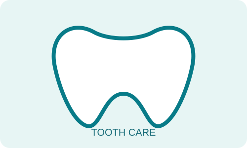

Root Canal Treatment
Root canal treatment is used to treat problems affecting the soft tissue inside a tooth. A dentist examines the tooth and decides whether this treatment is appropriate.
What happens during treatment?
The dentist assesses the tooth, removes affected tissue when needed, cleans the space and seals it. The exact plan depends on the individual case.
Aftercare
Follow the treating dentist's instructions and attend recommended follow-up visits.
